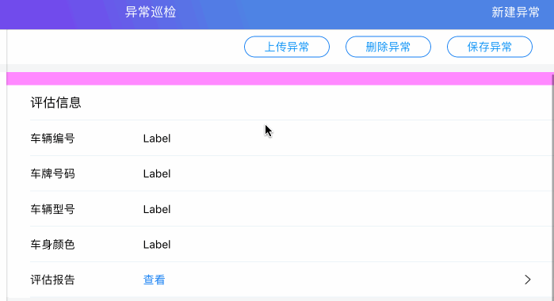
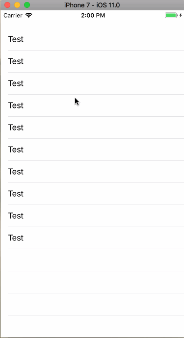
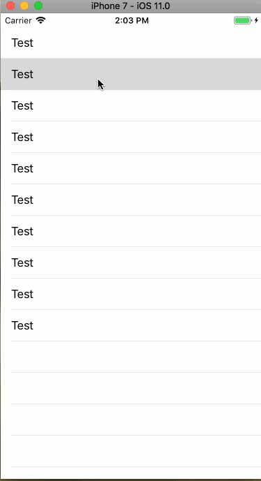

灵活扩展的下拉刷新控件的封装

最近开始做新项目,需要在Swift项目中使用下拉刷新控件,之前的项目有用过一起其他的三方库,比如MJRefresh,CRRefresh,但是MJ是OC的,总是感觉一个纯Swift项目用OC的不太爽,CR的库没有升级到Swift4,由于是新项目,直接上的Swift4,也不能用,所以就打算自己封装一个.
其实下拉刷新这种常用的控件Github上有很多都封装的不错,但是在我看来,他们都太重了,大部分功能都是我不需要的,至少现在不需要,所以我打算封装一个简单灵活的(适应现在的需求就可以),易扩展的(未来有新的需求也可以很好的实现).
这篇文章我会先从实现功能的角度实现一个耦合性很强的刷新控件,然后一步步的优化,去依赖,最后形成一个使用起来很方便的下拉刷新控件,最后提出当初我设计的时候的一些疑问,和一些优缺点作为自己以后的思考或和大家一起沟通.
一个简单的下拉刷新View
这是一个UI控件,所以首先我就创建了一个View.并把它添加到一个SrollView上.
extension UIScrollView {
var neoRefreshHeader: RefreshView{
get{
let view = Bundle.main.loadNibNamed("RefreshView", owner: self, options: nil)?.last as! RefreshView
self.addSubview(view)
view.snp.makeConstraints { (make) in
make.left.right.equalTo(self)
make.bottom.equalTo(self.snp.top)
make.height.equalTo(60)
}
return view
}
}
}
这时候当你的scrollView调用neoRefreshHeader的时候,view就添加到ScrollView上,下拉的时候就能看到了.但现在这个View是一个纯展示的静态的,我们的需求就是要在用户不同的操作下,我们有响应,并且能向业务层回调(进行网络请求等耗时操作).这时候我们就需要做一个总结,总结仅对这个功能来说,用户会有哪些操作,然后对这些操作,做一个抽象,把他的操作,抽象为数据的表现形态.
这里我想稍微展开一下,就是抽象的这一个过程,自从上学开始,我们就一直没有离开过这个词,只不过小学的老师从来不会和你说这个词,因为说了你也不懂,但是抽象经常会和一个词一起说,那就是建模.维基百科给的解释有点模糊,我更偏向百度百科的解释:建模就是建立模型，就是为了理解事物而对事物做出的一种抽象，是对事物的一种无歧义的书面描述.数学都是从实际的特殊的问题出发,将它抽象,一般化,再去解决实际的问题.
这个世界很多道理都是相通的,社会哲学和自然科学一直也是相辅相成的.说了这么多,就是想表达,很多东西,思想都是一样的.我们今天要做的这一个简单的下拉刷新的封装也是一样,从一个特殊的下拉刷新出发,抽象成一个一般化的控件,并用它来解决各类不同需求的刷新问题.以后我们封装别的控件,做别的框架也可以用这样的思想.当然这只是个人理解.当我瞎扯淡就好~~
回到之前说的,把用户的操作,抽象成一个数据模型,要想下拉刷新,用户要下拉ScrollView,到一定程度,然后松手,数据刷新.那么其实我们可以把它抽象成三种状态对应一个枚举类型
enum RefreshStatus : String{
case pullToRefresh = "下拉刷新"
case loading = "正在加载"
case releaseToRefresh = "松开刷新"
}
用户开始拖拽的时候是下拉刷新状态,到一定程度,用户还去拖拽,就变成松开刷新的状态,然后用户松手了,就是正在加载状态,最后加载完毕,回到下拉刷新状态,这样一个闭环.确定了这几个状态,我们需要和用户拖拽距离这个数据做配合来改变状态,然后在根据状态的改变来做出UI不同的展示,响应给用户.这就需要做监听
override func willMove(toSuperview newSuperview: UIView?) {
guard let view = newSuperview as? UIScrollView else{
return
}
scrollView = view
scrollView?.addObserver(self, forKeyPath: "contentOffset", options: NSKeyValueObservingOptions.new, context: nil)
}
当我这个View被添加到ScrollView的时候做监听contentOffset属性
override func observeValue(forKeyPath keyPath: String?, of object: Any?, change: [NSKeyValueChangeKey : Any]?, context: UnsafeMutableRawPointer?) {
if let path = keyPath,path == "contentOffset"{
let contontMaxY = -(pullHeight + (scrollView.contentInset.top))
let y = scrollView.contentOffset.y
refreshView?.refreshContentOffset(scrollView.contentOffset)
//拖拽
if scrollView.isDragging{
if y > contontMaxY{
type = .pullToRefresh
}else{
type = .releaseToRefresh
}
}else{
//松手
if type == .releaseToRefresh{
self.beginHeaderRefreshing()
}
}
}
}
根据用户下拉的距离的变化,和手是否在屏幕上在相关的逻辑判断来改变状态.最后就是根据状态来改变UI了,我把它写到了枚举的didset里,来统一管理.
var type = RefreshStatus.pullToRefresh{
didSet{
titleLabel.text = type.rawValue
}
}
跑起来的效果是
作为一个第一版的Demo,它是可以接受的.当然我们还需要增加许多方法,比如func beginHeaderRefreshing() func endHeaderRefreshing()
单一职责,功能拆分,易扩展,去依赖
首先第一点单一职责.这个RefreshView它现在做了好多事,监听用户的滑动手势是它在做,UI的动态更新给用户反馈也是它在做,它一个View做了两件事,这显然没有做到单一职责.我们需要把这个监听放到manager里,让manager去管理view,用户的操作会改变manager里的枚举状态,manager的每当状态改变的时候都会通知view,嘿~哥们,你该变成xxx状态的样子了.然后view改变.这样,我们做到了单一职责,功能也拆分的很明确.
这时候我们在ScrollView中,添加的get方法就不能返回View了,而是Manager,Manager中实现RefreshControl这个协议
protocol RefreshControl{
func beginHeaderRefreshing()
func endHeaderRefreshing()
func addPullRefresh(_ refreshView : RefreshStatusChangeProtocol & UIView,_ action: @escaping (() ->Void))
}
在addPullRefresh的时候创建Manager
func addPullRefresh(_ refreshView: UIView & RefreshStatusChangeProtocol = RefreshViewConfig.share.defaultView, _ action: @escaping (() -> Void)) {
for subView in scroll.subviews{
if let refreshView = subView as? (UIView & RefreshStatusChangeProtocol){
refreshView.removeFromSuperview()
}
}
let refreshViewManager = RefreshViewManager(scrollView: scroll)
refreshViewMaker.addPullRefresh(refreshView, action)
}
为了防止重复添加,每次添加的时候都遍历一遍ScrollView,将重复的删掉[1].然后创建Manager,并将负责展示的View传到manager中去,
func addPullRefresh( _ refreshView: (UIView & RefreshStatusChangeProtocol), _ action: @escaping (() ->Void)){
self.action = action
self.refreshView = refreshView
self.scrollView.addSubview(refreshView)
self.snp.make{make in
xxxxxxxx
}
}
在Manager中 将view添加在ScrollView上.
init(scrollView : UIScrollView) {
super.init(frame: CGRect(x: 0, y: 0, width: 0, height: 0))
self.scrollView = scrollView
self.scrollView.addObserver(self, forKeyPath: "contentOffset", options: NSKeyValueObservingOptions.new, context: nil)
}
并在manger的init方法里,对scrollView.contentOffset做监听.
extension UIScrollView{
var pd : RefreshControl
{
return RefreshViewManager(scroll: self)
}
}
这时ScrollView的扩展应该改为这个样子了,每次调用pd,都会返回RefreshControl这些协议类型,业务层也可以调用到声明的三个方法.这样做的目的是为什么?为什么不直接返回直接返回Manager?这样可以大大减少业务端使用的难度,也是为了更加的安全,返回给外层的,就仅仅是一个协议类型,没有任何多余的function.
Manager的工作完成了我们在来看看RefreshView
///只可以UIView来实现
protocol RefreshStatusChangeProtocol where Self : UIView {
func refreshStatusChange(type : RefreshStatus)
func refreshContentOffset(_ contentOffset: CGPoint)
var refreshViewManager: RefreshControl? {
get
set
}
}
RefreshView要做的事很简单,就是实现这个协议,下拉Status发生改变的时候manger会调用refreshStatusChange(type : RefreshStatus),要是有特殊的需要,就实现refreshContentOffset(_ contentOffset: CGPoint),至于那个get set的属性,我们暂时先不说.
这样,我们对这个控件做了一次优化,让我们跑起来看一下效果.但是结果是悲哀的,那就是崩溃了.这个问题,困惑了我很久,报的错误是监听的对象已经不在了.后来我发现,Manager被释放了,所以监听的位置崩溃了.
在ScrollView的扩展当中,每次都会返回一个新的Manager,也就是说每次业务层在调用scrollView.pd.addPullRefresh(_ refreshView : RefreshStatusChangeProtocol & UIView,_ action: @escaping (() ->Void))之后,manager就已经被释放了,而manger中却在监听ScrollView的滑动,所以crash了.但是下拉刷新的View却不会释放,因为它添加到ScrollView上,被ScrollView持有了.这就非常尴尬了,我们把功能拆分了,但是manager又是一个很尴尬的存在,因为谁都不想要它.扩展中只能添加计算属性,不能添加存储属性,所以每次get方法调用完之后,都会被释放.这里我有两种方法,一个是把manager也变成一个View 添加到ScrollView当中,成为下拉刷新View的父View.第二种,把让RefreshView持有manager.这样refreshView不释放,那manager也不会释放.他们的生命周期是一样的.最后我选了第二种.这就是RefreshStatusChangeProtocol增了的那个属性的原因.用它来持有manager,这样就不会释放了.(这个权衡要放在后面讨论)
还有最后一步,那就是去依赖,一个好的第三方库,肯定是依赖越少越好,我们在这里用了Snapkit,我们换成系统的autolayout
refreshView.translatesAutoresizingMaskIntoConstraints = false
self.scrollView.addSubview(refreshView)
self.scrollView.addConstraint(NSLayoutConstraint(item: refreshView, attribute: NSLayoutAttribute.left, relatedBy: NSLayoutRelation.equal, toItem: scrollView, attribute: NSLayoutAttribute.left, multiplier: 1, constant: 0))
self.scrollView.addConstraint(NSLayoutConstraint(item: refreshView, attribute: NSLayoutAttribute.right, relatedBy: NSLayoutRelation.equal, toItem: scrollView, attribute: NSLayoutAttribute.right, multiplier: 1, constant: 0))
self.scrollView.addConstraint(NSLayoutConstraint(item: refreshView, attribute: NSLayoutAttribute.bottom, relatedBy: NSLayoutRelation.equal, toItem: scrollView, attribute: NSLayoutAttribute.top, multiplier: 1, constant: 0))
refreshView.addConstraint(NSLayoutConstraint(item: refreshView, attribute: NSLayoutAttribute.height, relatedBy: NSLayoutRelation.equal, toItem: nil, attribute: NSLayoutAttribute.height, multiplier: 1, constant: pullHeight))
这样一来,这次优化算是完成了.核心功能完成后,那就是锦上添花了,就是定义几个不同样式的RefreshView,给大家提供使用.但这个时候,又一个问题就被抛出来了,你定义了那么多RefreshView,每个都有不用的下拉刷新效果,那你准备怎么让业务端使用这些View呢.
scrollView.pd.addPullRefresh(RefreshView()) {
DispatchQueue.main.asyncAfter(deadline: DispatchTime.now() + 2, execute: {
self.scrollView.pd.endHeaderRefreshing()
})
}
在没有优化之前,我们是这样调用的.我们必须传一个View和一个action,这个action属性很有必要,因为每个ScrollView刷下要执行的业务都是不一样的,但是这个View就不是很有必要了,一个App大部分的刷新样式都是一样的,我们每次添加下拉刷新都需要传一个View,这显然很麻烦,所以我决定加一个默认值,这样当使用默认的View的时候就可以不用传了,由于协议类型不可以有默认是方法,所以我就又做了一个Struct,来实现默认值.然后,又做了一个config.swift,可以配置默认的View和下拉的高度.这里就不在细说.可以clone下代码看下.嘻嘻
下面我们开始定义不同样式的刷新.
class RefreshViewConfig {
static let share = RefreshViewConfig()
var defaultView: (UIView&RefreshStatusChangeProtocol) {
get{
return CustomAnimateRefreshView()
}
}
var defaultPullHeight: CGFloat = 60
}
带有不同动画的RefreshView
- 普通的下拉刷新(类似新浪微博)

经过我们对功能的拆分,它的代码简单至极,实现这样的效果,仅仅需要40行代码.
class NormalRefreshView: UIView,RefreshStatusChangeProtocol {
var refreViewMake: RefreshControl?
@IBOutlet weak var refreshImage: UIImageView!
@IBOutlet weak var activityIndicatorView: UIActivityIndicatorView!
@IBOutlet private weak var titleLabel: UILabel!
func refreshStatusChange(type: RefreshStatus) {
switch type {
case .loading:
titleLabel.text = "正在加载"
refreshImage.isHidden = true
activityIndicatorView.startAnimating()
case .pullToRefresh:
refreshImage.isHidden = false
titleLabel.text = "下拉刷新"
activityIndicatorView.stopAnimating()
self.refreshImage.transform = self.refreshImage.transform.rotated(by: CGFloat.pi)
case .releaseToRefresh:
refreshImage.isHidden = false
titleLabel.text = "松开刷新"
activityIndicatorView.stopAnimating()
UIView.animate(withDuration: 0.2, animations: {
self.refreshImage.transform = self.refreshImage.transform.rotated(by: CGFloat.pi)
})
}
}
class func getXibView() -> NormalRefreshView{
let view = Bundle.main.loadNibNamed("NormalRefreshView", owner: self, options: nil)?.last as! NormalRefreshView
return view
}
func refreshContentOffset(_ contentOffset: CGPoint) {
}
}
- 简单动效的刷新

它的代码不需要很多,100多行足矣,使用UIBezierPath,CAShapeLayer,CAKeyframeAnimation,CAAnimationGroup配合起来使用,就可以了~但我对效果还是有点不太满意,还需要优化.
总结
到这里,一个下拉刷新的控件就封装完了,下面我要提出一些疑问.
最大的疑问就是在功能拆分的时候manger被释放的问题,我当时提出的两种方案,一种View嵌套的模式,由父view监听用户的动作,子view展示.第二种是将由view引用manger.当时我选择了第二种,我也很难说服自己用哪个好,因为我觉得用哪个都不好.所以这个疑问就放到了最后.
说一下继承,当这篇博客要写完的时候,我在发现了我当初那个问题的答案,至少我心里是满意的答案,就是继承,可能现在提出继承大家会不屑一顾,在这个面向协议,面向切面横行的年代,提出继承未免有点过时了.也正因为我的这个思想导致我一开始设计的时候就总想着面向协议,现在回头想一想,那个manger没有引用,被释放了,其实也说明它是个累赘,或者说它是多余的,但是我们的功能还必须要拆分,这时候我就应该想到继承了,basicView里的私有方法监听,并调用public的方法,public function 负责的实现由继承basicView的View自己来override,子View只在乎动画的效果.
继承确实会有很多问题,比如经典的菱形问题,也有很多诟病,但是任何一种思想,一种设计模式,存在就一定是有意义,它们都各有优缺点,这世界本就没有完美的事物,我们在使用的时候需要权衡利弊选择最合适的.
最后~Github地址